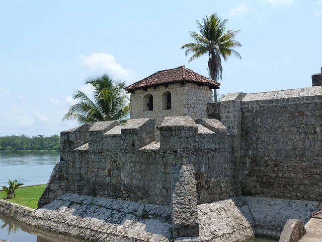
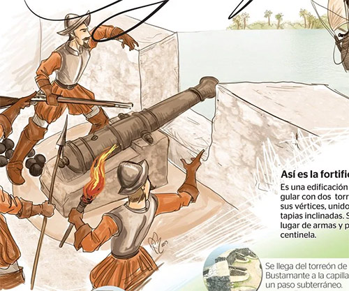
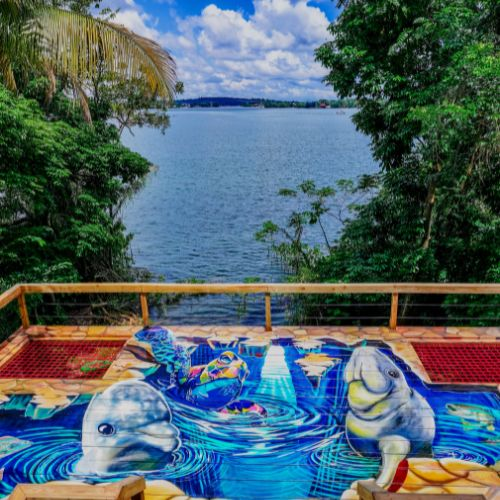
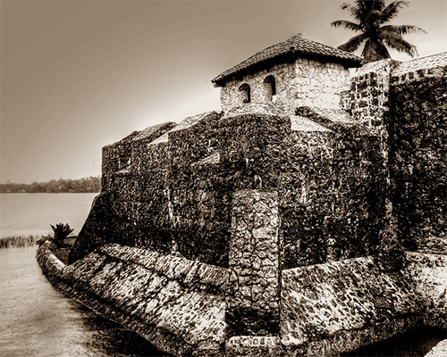

El Castillo de San Felipe de Lara fue construido durante la época colonial española, iniciando en el siglo XVII. Su estructura fue modificada varias veces para mejorar su defensa. Representa una de las pocas fortalezas coloniales que aún se conservan en Guatemala.

Durante la colonia, el castillo tenía la función de proteger las embarcaciones españolas que transportaban mercancías. Piratas del Caribe intentaban atacar esta ruta, por lo que la fortaleza se ubicó estratégicamente en el paso del Río Dulce para controlar el acceso y defender el territorio.

El castillo está rodeado por el Río Dulce y cerca del lago de Izabal, lo que crea un entorno natural muy atractivo. Esta combinación de historia y paisaje hace que el lugar no solo tenga valor cultural, sino también ecológico y turístico.

Actualmente, el castillo es un patrimonio cultural importante de Guatemala. Es visitado por estudiantes, turistas y locales que buscan conocer más sobre la historia del país. Además, es un símbolo de identidad nacional que refleja la época colonial y la defensa del territorio.
